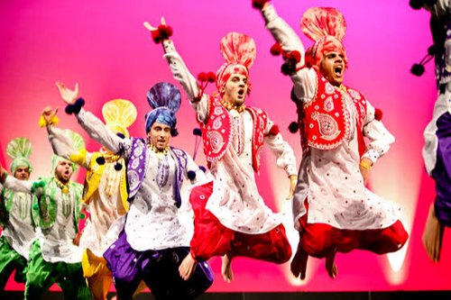
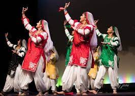
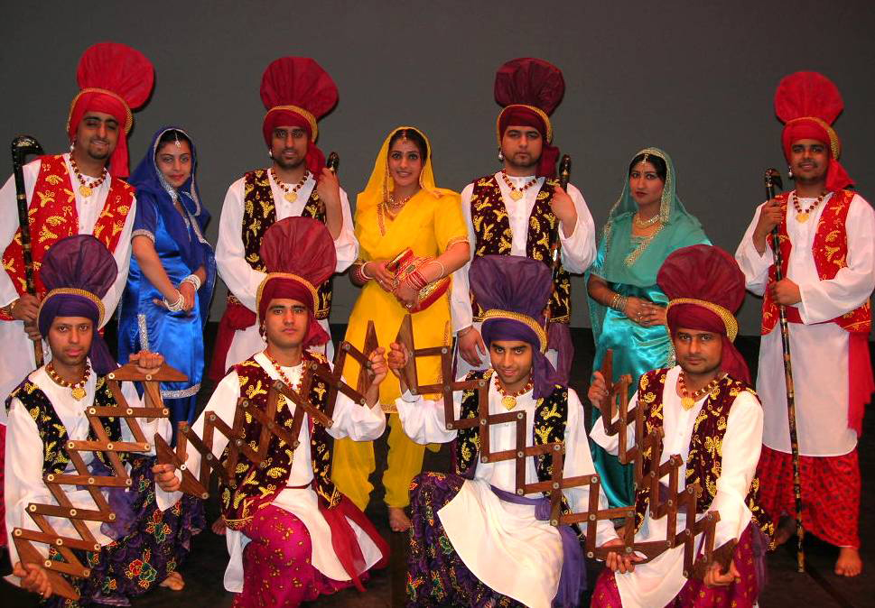
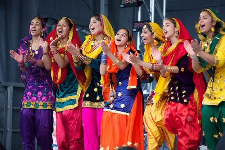
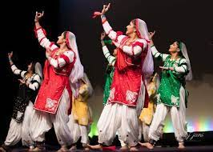
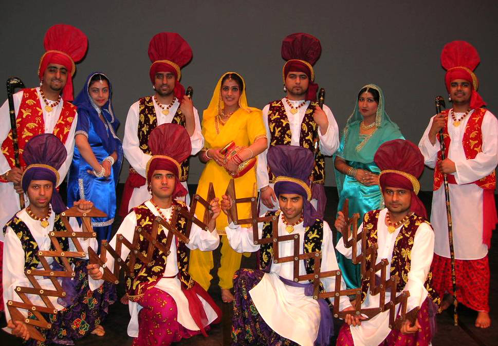
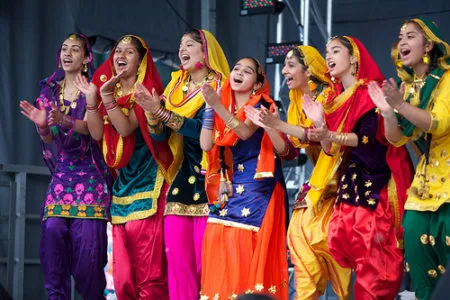

The main Punjabi folk dance for females is gidda or giddhah and for men or for both men and women is bhangda or bhangra. The dances are typically performed at times of celebration, such as harvest (Visakhi), weddings, melas (festivals) like Lohri, Jashan-e-Baharan (Spring Festival) etc., at which everyone is encouraged to dance. Married Punjabi couples usually dance together. The husband dances in the style of male Punjabi dances, frequently with arms raised, and the wife dances in the style of female Punjabi dances.
Bhangra was originally dedicated to harvesting but later changed its shape with some modernization, changing musical equipment and evolving dancing patterns. Bhangra’s energy with a traditional Punjabi Dhol and Jhanjhar has gradually become popular across all Indian states.Bhangra outfit is Lungi and buttonless jacket. The dancers also use different-color handkerchiefs. Wearing Pug (turban), a sign of Punjabi pride. Women perform it with traditional Salwar-Kameez and Chunni, often wears male dancers.
 
